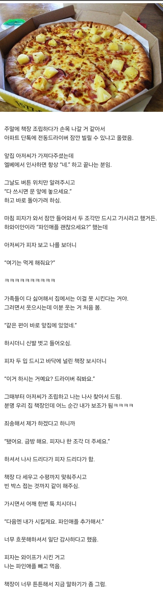

여기는 먹게 해줘요 ㅋㅋㅋㅋ

여기는 먹게 해줘요 ㅋㅋㅋㅋ
개추
아저씨 와이래 짠하노 ㅋㅋ 자기가 번 돈으로 자기 먹고싶은것도 못시키냐고 ㅋㅋ
어쩔수없는게 피자는 여럿이서 공유하는음식이라 한명만 좋아하면 사실상 묵살이지 ㅋㅋㅋ
4in1 같은거 시켜도 파인애플과즙 넘치면 맛번지고
과일은 차갑게 먹는거야 차가워야해
그래도 되는게 있고 안되는게 있는거야ㅡㅡ
혼자 먹을거 아니면 가족들 다 안좋아하는데 시키기 좀 그렇지
ㅋㅋㅋㅋㅋ여기는 먹게 해줘요??
해드릴ㄲㅔ
ㅋㅋㅋㅋㅋㅋㅋ 먹게해줘요 진짜 웃프네
Ai
아저씨 말이나 마무리는 센스있게 잘 쓰인 거 같긴 했는데
'분명 우리 집 책장인데 어느 순간 내가 보조가 됨 ㅋㅋㅋㅋ'
이 문장이 넘 AI 말투야
그냥 두번째 문단부터 대놓고 ai야
뜨거운파인애플 너무별로야
뜨거워야 맛있따고
내가 그래서 결혼하고선 쯔란 양꼬치 마라탕 양고기를 못먹음 소고기도 많이 줄었으
파인애플 피자 맛있긴 맛있더라
뜨거운 파인애플, 축축해진 도우, 강한 단맛. 파피단 사형
하와이안피자가 맛잇지 파인애플 달랑 올린 피자는 별루야
하 왜 ai냄새가나지? 뭐지 킁킁
ai는 왜케 대사를 넣는거냐
구운파인애플 괴식이라 생각했는데,,, 생각보다 갠춘....
과일 따듯하게 먹으면 더 달고 맛있던데 잼도 만들고 바로 먹으면 개맛돌인데 냉장고 들어가서 차가워지면 그냥 그럼
이탈리아임?ㅋㅋㅋㅋㅋㅋㅋㅋ
별개로 파인애플 커피 먹지마라
누가시킨거 한입 얻어먹었는데
음쓰향 맛 난다
최악이였음
재밌네 글ㅋㅋㅋ
내인생 첫 피자가 초 1인가 2 때 먹은 하와이안 피자ㅋ 파인애플도 원래 좋아해서 하와이안 피자싫어하진 않는데
인생 살면서 먹은게 5번도 안되는듯
ㅋㅋㅋㅋㅋㅋㅋㅋㅋㅋ 나지금 말하기가 좀 그럼 ㅋㅋㅋ